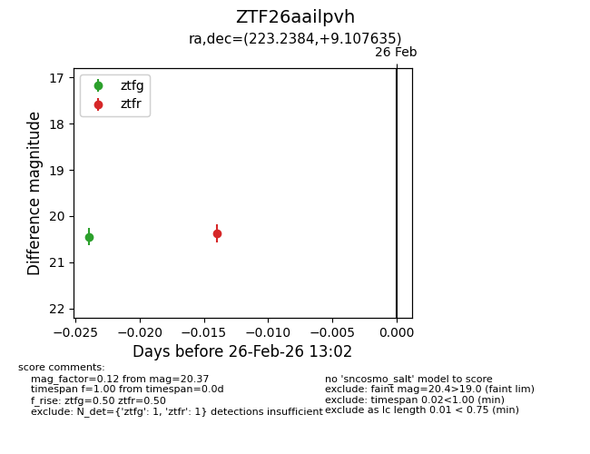
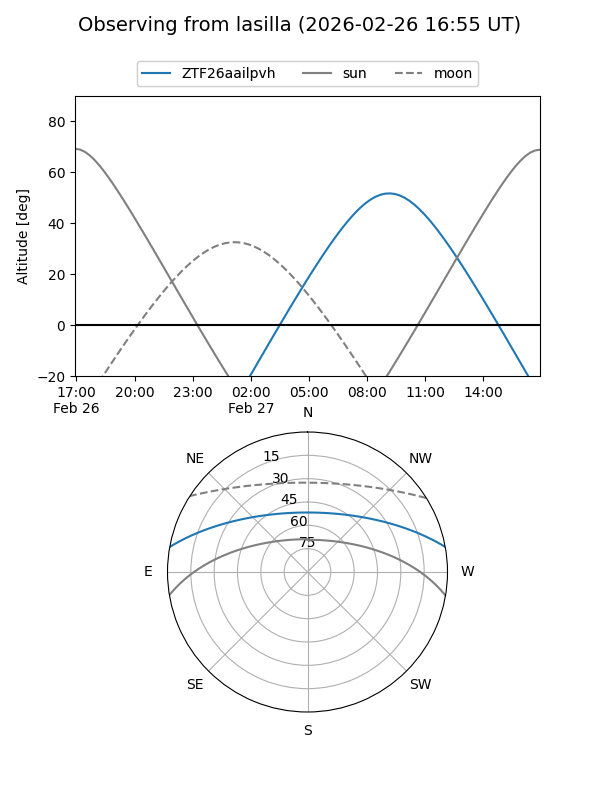
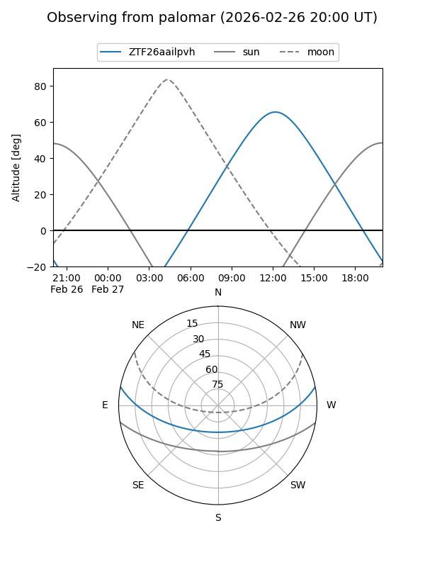

ZTF26aailpvh
Target ZTF26aailpvh at 2026-02-26 13:03
Aliases and brokers:
FINK: link
Lasair: link
ALeRCE: link
alt names
ZTF26aailpvh (ztf,fink_ztf)
Coordinates:
equatorial (ra, dec) = 223.2384,+9.10763
equatorial (HMS+DMS) = 14:52:57.21,+09:06:27.49
galactic (l, b) = (6.5626,+56.12859)
Flags:
Photometry:
last ztfg=20.44, ztfr=20.37
1 ztfg, 1 ztfr detections
Lightcurve

Visibility


Additional plots